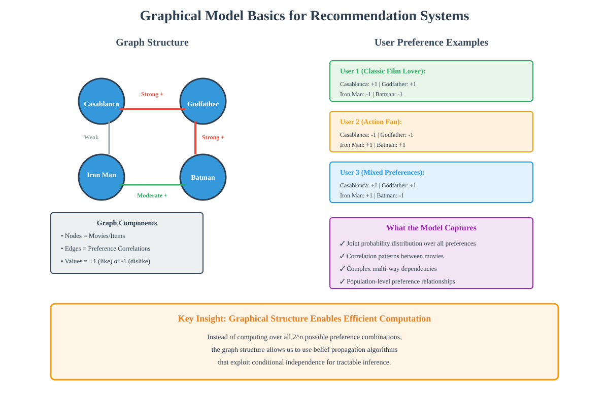
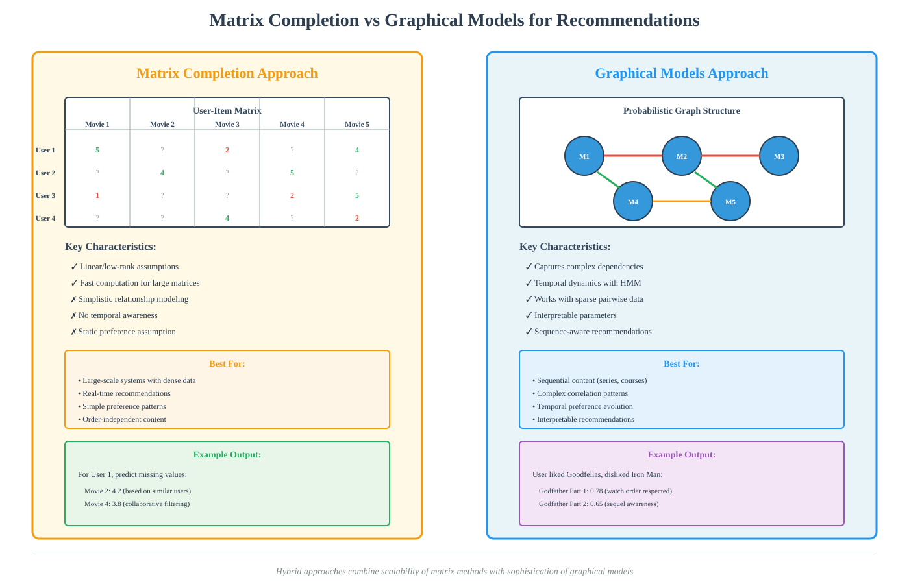
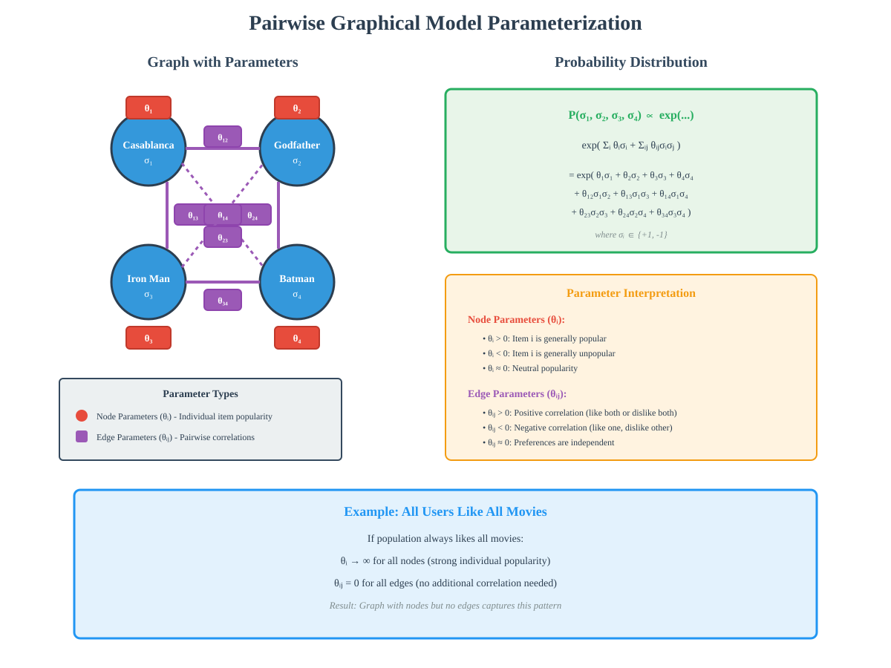
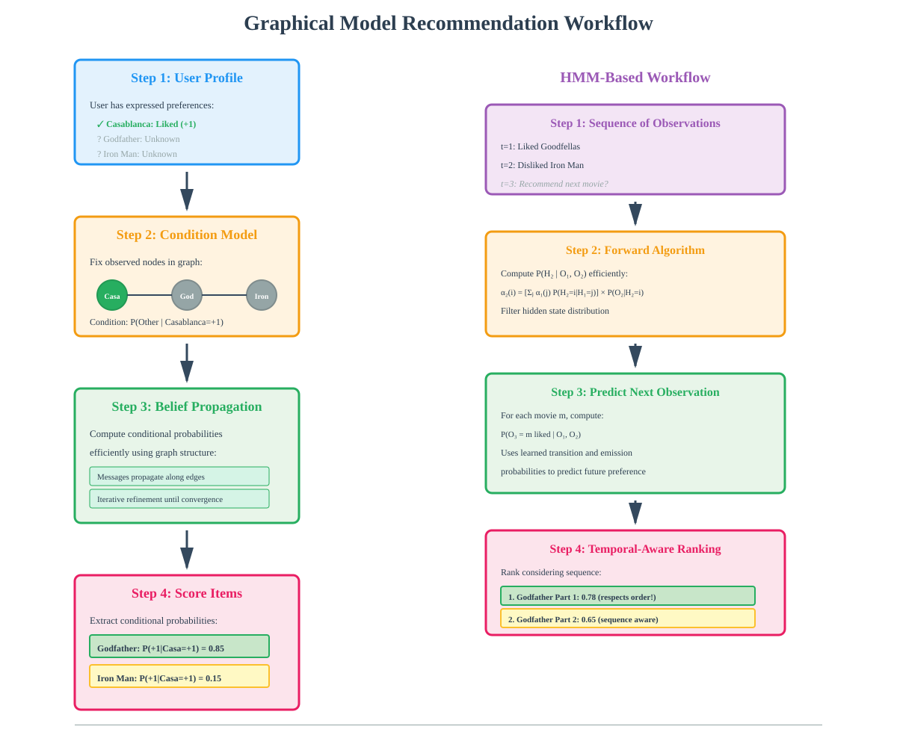
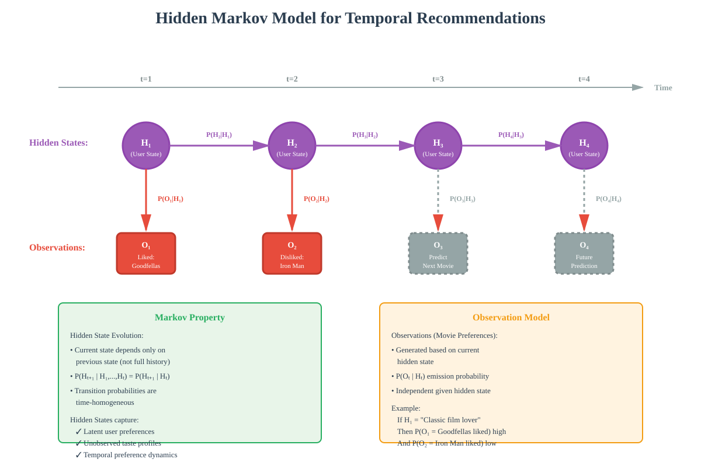

Graphical Models in Recommendation Systems
Advanced techniques for capturing complex user preferences and temporal dynamics
📋 Quick Navigation
- Introduction
- Limitations of Matrix Completion
- Probabilistic Graphical Models
- Pairwise Graphical Models
- Parameter Estimation
- Using Graphical Models for Recommendations
- Temporal Relationships with Hidden Markov Models
- HMM for Sequential Recommendations
- Practical Implementation
- Comparison with Matrix Completion
- References & Further Reading
🎯 Introduction
Graphical models provide a powerful framework for building sophisticated recommendation systems that can capture complex user preference relationships and temporal dynamics. Unlike traditional matrix completion approaches, graphical models offer:
Key Advantages:
- Complex Relationship Modeling: Capture intricate dependencies between user preferences across multiple items
- Temporal Awareness: Account for how preferences evolve over time using Markovian structures
- Computational Efficiency: Leverage graphical structure for scalable inference algorithms
- Sparse Data Handling: Learn from incomplete preference data effectively
Primary Use Cases:
- Movie and video recommendations with sequel awareness
- Music playlist generation with temporal flow
- Product recommendations considering item relationships
- Content discovery with complex preference patterns

🚫 Limitations of Matrix Completion
Traditional recommendation systems based on matrix completion have fundamental constraints that limit their effectiveness:
Core Limitations:
- Simplistic Relationships: Assumes linear or low-rank relationships between user preferences that don't capture real-world complexity
- Static Assumptions: Treats user preferences as fixed, ignoring temporal evolution and contextual changes
- Limited Expressiveness: Cannot model intricate dependencies between multiple items simultaneously
- Sequential Ignorance: Fails to recognize importance of viewing order (e.g., movie sequels)
Real-World Example:
Consider recommending movies from The Godfather trilogy:
- Matrix Completion Approach: May recommend Part 2 first because it has highest average rating
- Problem: Ignores that Part 2 should only be watched after Part 1
- Impact: Poor user experience and dissatisfaction with recommendations
Why This Matters:
User preferences are influenced by:
- Complex correlations between items
- Temporal ordering of consumption
- Context-dependent relationships
- Evolution of tastes over time

🔗 Probabilistic Graphical Models
Probabilistic graphical models provide a succinct representation for capturing generic dependency relationships between items in a computationally efficient manner.
Core Concepts:
Graph Structure:
- Nodes: Represent individual items (e.g., movies)
- Edges: Capture relationships between item preferences across users
- Values: Each node takes binary values (+1 for like, -1 for dislike)
- Distribution: Models the joint probability distribution over all node assignments
Example - Netflix Movie Graph:
Consider four movies: Casablanca, Iron Man, Godfather, and Batman
- Four Nodes: One per movie
- Six Possible Edges: One for each pair of movies
- Edge Meaning: An edge between Casablanca and Godfather indicates preference correlation
- User Data: Each user provides +1/-1 values for movies they've rated
How It Captures Relationships:
The graphical model represents the distribution of user preferences across all movies:
- Strong Positive Edge: Users who like one movie tend to like the other
- Strong Negative Edge: Users who like one movie tend to dislike the other
- Weak/No Edge: Preferences are relatively independent
Key Advantage:
Unlike matrix completion, this structure can capture:
- Multi-way dependencies between items
- Complex correlation patterns
- Non-linear relationships in preference space
🎲 Pairwise Graphical Models
Pairwise graphical models use a specific parameterization with distinct parameters for each node and edge, enabling efficient computation and learning.
Mathematical Framework:
Parameters:
- Node Parameters: θ₁, θ₂, θ₃, θ₄ (one per node)
- Edge Parameters: θᵢⱼ (one per edge between nodes i and j)
Probability Distribution:
The probability of a specific assignment σ₁, σ₂, σ₃, σ₄ (where each σᵢ ∈ {+1, -1}) is:
P(σ₁, σ₂, σ₃, σ₄) ∝ exp(Σᵢ θᵢσᵢ + Σᵢⱼ θᵢⱼσᵢσⱼ)
Where:
- First Term (Σᵢ θᵢσᵢ): Sum over all nodes, captures individual item popularity
- Second Term (Σᵢⱼ θᵢⱼσᵢσⱼ): Sum over all edges, captures pairwise correlations
- Exponential Form: Ensures valid probability distribution
Parameter Interpretation:
Node Parameters (θᵢ):
- Large Positive: Item is generally popular (most users like it)
- Large Negative: Item is generally unpopular (most users dislike it)
- Near Zero: Neutral popularity across population
Edge Parameters (θᵢⱼ):
- Large Positive: Strong positive correlation (like both or dislike both)
- Large Negative: Strong negative correlation (like one, dislike other)
- Near Zero: Preferences are independent
Example Scenario:
If all users like all movies:
Node parameters: θᵢ = ∞ for all i
Edge parameters: θᵢⱼ = 0 for all pairs
Result: Graph with no edges needed

📊 Parameter Estimation
Learning graphical model parameters from sparse user preference data is achieved through moment matching and belief propagation algorithms.
Learning from Sparse Data:
Key Insight:
Despite missing many individual user preferences, we can estimate parameters if:
- Across all users combined, we observe preferences for all pairs of movies
- We can compute pairwise moments (co-occurrence statistics)
Pairwise Moments to Estimate:
For each pair of movies (i, j), compute:
- Both Liked: Fraction of users who like both movies
- One Liked, One Disliked: Fraction who like movie i but dislike movie j (and vice versa)
- Both Disliked: Fraction of users who dislike both movies
Moment Matching Approach:
Algorithm Steps:
- Initialize: Start with random parameter values for nodes and edges
- Compute Induced Moments: Calculate what moments the current parameters would produce
- Compare: Measure mismatch between induced moments and empirically observed moments
- Update: Adjust node and edge parameters to reduce mismatch
- Iterate: Repeat steps 2-4 until convergence
Belief Propagation:
Purpose:
Efficiently compute induced moments from graphical model parameters
Key Features:
- Message Passing: Nodes exchange probabilistic messages along edges
- Iterative Refinement: Messages updated until convergence
- Computational Efficiency: Exploits graph structure, avoids exponential complexity
- Tractability: Makes moment matching feasible for large graphs
Why Belief Propagation:
Direct computation of induced moments requires:
- Summing over all possible assignments (2ⁿ for n movies)
- Computationally intractable for large n
Belief propagation reduces this to polynomial time by leveraging conditional independence in the graph structure.
Practical Considerations:
- Convergence: Usually converges quickly in practice
- Approximations: May provide approximate solutions for loopy graphs
- Scalability: Handles thousands of items efficiently
🎬 Using Graphical Models for Recommendations
Once parameters are learned, graphical models enable personalized recommendations through conditional probability inference.
Recommendation Process:
Scenario:
User has liked only Casablanca; recommend from remaining movies
Steps:
- Condition on Observation: Fix the Casablanca node to +1 (liked)
- Compute Conditional Probabilities: For each other movie, calculate P(movie = +1 | Casablanca = +1)
- Score Assignment: Use conditional probabilities as recommendation scores
- Rank and Recommend: Order movies by scores, recommend top-ranked items
Computational Challenge:
Computing conditional distributions requires:
- Marginalizing over all other unobserved variables
- Considering all possible assignments to unobserved nodes
- Computing partition function (normalization constant)
Solution: Belief Propagation
Belief propagation efficiently computes these conditional probabilities by:
- Local Message Passing: Each node only communicates with neighbors
- Distributed Computation: Parallel updates possible
- Iterative Refinement: Messages converge to correct marginals
- Graph Structure Exploitation: Uses conditional independence properties
Advantages Over Matrix Completion:
- Richer Context: Considers relationships with all observed items simultaneously
- Non-Linear Patterns: Captures complex preference structures
- Explicit Correlations: Models why items are related, not just that they are
- Interpretability: Parameters have clear statistical meaning
Example Workflow:
User Profile:
- Liked: Casablanca
- Unknown: Iron Man, Godfather, Batman
Graphical Model Inference:
- P(Godfather = +1 | Casablanca = +1) = 0.85
- P(Batman = +1 | Casablanca = +1) = 0.42
- P(Iron Man = +1 | Casablanca = +1) = 0.15
Recommendation Order:
1. Godfather (score: 0.85)
2. Batman (score: 0.42)
3. Iron Man (score: 0.15)

⏰ Temporal Relationships with Hidden Markov Models
Hidden Markov Models (HMMs) extend graphical models to capture temporal aspects of user preferences, crucial for sequential content like movie series.
The Sequential Recommendation Problem:
Example Issue:
- User likes Goodfellas
- System recommends: Godfather Part 2, Part 1, Part 3
- Problem: Part 2 recommended first due to highest rating
- Solution Needed: Understand viewing order matters
Hidden Markov Model Structure:
Components:
- Time Steps: Each preference expression represents a time point
- Hidden States: Unobserved user preference state at each time (finite set of values)
- Observed States: Actual movie preferences expressed by user
- State Transitions: Hidden state at time t+1 depends on state at time t
Mathematical Framework:
Markov Property:
P(Hₜ₊₁ | H₁, H₂, ..., Hₜ) = P(Hₜ₊₁ | Hₜ)
Where:
- Hₜ: Hidden state at time t
- Markov Assumption: Future depends only on present, not entire history
- Homogeneity: Transition probabilities constant across time
Observation Model:
P(Oₜ | Hₜ)
Where:
- Oₜ: Observed preference at time t (e.g., "liked Goodfellas")
- Conditional Independence: Observation depends only on current hidden state
Why "Hidden"?
The underlying user preference state is not directly observable:
- We only see expressed preferences (observations)
- Hidden state captures latent factors influencing preferences
- Multiple observation sequences can come from same hidden state trajectory
Temporal Dynamics Captured:
- Sequential Patterns: Users who like movie A first often like movie B next
- Order Dependencies: Probability of liking item depends on previous items liked
- Evolution: User tastes can transition between preference states over time

🎯 HMM for Sequential Recommendations
Using learned HMMs, we can provide temporally-aware recommendations that respect viewing order and sequence dependencies.
Learning HMM Parameters:
Baum-Welch Algorithm:
Purpose:
Learn transition and observation probabilities from user preference sequences
Input Data:
- Multiple user preference sequences of varying lengths
- Each sequence: ordered list of movie preferences over time
Example:
User A: [Goodfellas: +1] → [Iron Man: -1] → [Godfather Part 1: +1]
User B: [Casablanca: +1] → [Godfather Part 1: +1] → [Godfather Part 2: +1]
Parameters to Learn:
- Transition Probabilities: P(Hₜ₊₁ = j | Hₜ = i) for all hidden state pairs (i, j)
- Emission Probabilities: P(Oₜ = movie | Hₜ = i) for all hidden states i and movies
- Initial State Distribution: P(H₁ = i) for all hidden states i
Making Recommendations:
Scenario:
User expressed preferences:
- Time 1: Liked Goodfellas
- Time 2: Disliked Iron Man
- Time 3: Want recommendation
Inference Process:
- Filter: Compute P(H₂ | O₁, O₂) using forward algorithm
- Predict: For each movie m, compute P(O₃ = m liked | O₁, O₂)
- Score: Use these probabilities as recommendation scores
- Rank: Order movies by scores, recommend highest
Key Advantage - Temporal Awareness:
Example Result:
P(Godfather Part 1 liked | Goodfellas liked, Iron Man disliked) = 0.78
P(Godfather Part 2 liked | Goodfellas liked, Iron Man disliked) = 0.65
Even though Godfather Part 2 has higher population-level rating:
- Part 1 scores higher due to sequential pattern learned from data
- Users who like Goodfellas typically watch Part 1 before Part 2
- System respects natural viewing order
Computational Approach:
Forward Algorithm:
Efficiently computes likelihood of observation sequence:
αₜ(i) = P(O₁, O₂, ..., Oₜ, Hₜ = i)
Forward Recursion:
αₜ₊₁(j) = [Σᵢ αₜ(i) × P(Hₜ₊₁ = j | Hₜ = i)] × P(Oₜ₊₁ | Hₜ₊₁ = j)
Backward Algorithm:
Computes probability of future observations:
βₜ(i) = P(Oₜ₊₁, ..., Oₜ | Hₜ = i)
Combined Inference:
Using both forward and backward probabilities enables efficient computation of:
- Conditional probabilities for recommendations
- Expected state occupancies for learning
- Most likely state sequences (Viterbi algorithm)
Practical Considerations:
- Variable Length Sequences: Different users have different numbers of preferences
- Cold Start: Initialize with population-level priors for new users
- Model Size: Number of hidden states is hyperparameter (typically 5-50)
- Convergence: Baum-Welch usually converges in 10-100 iterations
💻 Practical Implementation
Python Libraries and Tools:
Core Libraries:
- pgmpy: Probabilistic graphical models in Python
- hmmlearn: Hidden Markov Models implementation
- NetworkX: Graph structure manipulation
- NumPy/SciPy: Numerical computations
Basic Implementation Example:
from pgmpy.models import MarkovNetwork
from pgmpy.factors.discrete import DiscreteFactor
from pgmpy.inference import BeliefPropagation
import numpy as np
# Define pairwise graphical model
model = MarkovNetwork()
model.add_nodes_from(['Casablanca', 'Godfather', 'IronMan', 'Batman'])
model.add_edges_from([
('Casablanca', 'Godfather'),
('Godfather', 'Batman'),
('IronMan', 'Batman')
])
# Add factors (parameters)
factor_cg = DiscreteFactor(
['Casablanca', 'Godfather'],
[2, 2],
np.array([[0.3, 0.7], [0.8, 0.2]])
)
model.add_factors(factor_cg)
# Perform inference
bp = BeliefPropagation(model)
result = bp.query(
variables=['Godfather'],
evidence={'Casablanca': 1}
)
print(result)
HMM Implementation:
from hmmlearn import hmm
import numpy as np
# Initialize HMM
model = hmm.GaussianHMM(n_components=10, covariance_type="full")
# Training data: sequences of user preferences
# X shape: (n_samples, n_features)
# lengths: list of sequence lengths
X = np.concatenate(user_preference_sequences)
lengths = [len(seq) for seq in user_preference_sequences]
# Train model
model.fit(X, lengths)
# Predict next preference
user_history = np.array([[1, 0, 1, 0]]) # Recent preferences
log_prob, state_sequence = model.decode(user_history, algorithm="viterbi")
# Score potential recommendations
scores = model.predict_proba(user_history)
Deployment Considerations:
Model Serving:
- Precompute: Calculate common conditional probabilities offline
- Caching: Store frequent query results
- Batching: Process multiple users simultaneously
- Approximations: Use sampling for very large graphs
Scaling Strategies:
- Distributed Belief Propagation: Partition graph across machines
- Mini-Batch Learning: Update parameters on data subsets
- Feature Hashing: Reduce parameter space for very large item catalogs
- Hierarchical Models: Multi-level graphs for different item granularities
Performance Metrics:
- Precision@K: Fraction of top-K recommendations that are relevant
- Recall@K: Fraction of relevant items in top-K recommendations
- NDCG: Normalized Discounted Cumulative Gain for ranking quality
- Temporal Coherence: Measure of sequential appropriateness
📊 Comparison with Matrix Completion
Comprehensive Comparison Table:
| Aspect | Matrix Completion | Graphical Models |
|---|---|---|
| Relationship Modeling | Linear/low-rank assumptions | Complex non-linear dependencies |
| Temporal Awareness | None (static preferences) | Explicit temporal dynamics via HMM |
| Computational Complexity | O(nmk) for n users, m items, k factors | O(d²n) for n items, d degree |
| Interpretability | Latent factors hard to interpret | Parameters have clear statistical meaning |
| Data Requirements | Needs moderate data density | Works with sparse pairwise observations |
| Scalability | Excellent for large matrices | Good with belief propagation |
| Sequential Understanding | No order awareness | Captures viewing/consumption order |
| Cold Start | Difficult for new items | Can leverage item relationships |
When to Use Each Approach:
Matrix Completion Best For:
- Large-scale systems with dense interaction data
- Scenarios where temporal order is unimportant
- Real-time systems requiring very fast inference
- Simple preference patterns without complex correlations
Graphical Models Best For:
- Complex correlation patterns between items
- Sequential content (series, episodes, courses)
- Sparse data with pairwise observations available
- Interpretable recommendation explanations
- Temporal dynamics are important
Hybrid Approaches:
Combined Strategy:
- First Stage: Matrix completion for initial broad recommendations
- Second Stage: Graphical model refinement for sequential ordering
- Result: Scalability of matrix methods + sophistication of graphical models
Neural Network Connection:
Modern deep learning approaches (RNNs, Transformers) for recommendations:
- Similarity to HMMs: Both model sequential dependencies
- Advantages of Neural Nets: Learn representations automatically, handle longer sequences
- Used By: Spotify (RNNs for playlist generation), Netflix (sequence-aware models)
Industry Examples:
- Spotify: Uses recurrent neural networks for sequential playlist recommendations
- YouTube: Combines collaborative filtering with sequential neural models
- Netflix: Hybrid approach with temporal dynamics
📚 References & Further Reading
Foundational Papers:
- "Probabilistic Graphical Models: Principles and Techniques" by Koller & Friedman (2009)
- Comprehensive textbook on graphical models
-
"Hidden Markov Models for Collaborative Filtering" by Rendle et al. (2010)
- Application of HMMs to recommendation systems
-
"Collaborative Filtering for Implicit Feedback Datasets" by Hu et al. (2008)
- Foundational work on implicit preference modeling
- IEEE Xplore
Advanced Topics:
- "Deep Learning for Sequential Recommendation: Algorithms, Influential Factors, and Evaluations" - ACM TOIS (2020)
- Modern neural approaches to sequential recommendations
-
"Session-based Recommendations with Recurrent Neural Networks" by Hidasi et al. (2016)
- RNN application to session-based recommendations
- arXiv:1511.06939
Practical Resources:
- pgmpy Documentation
- Python library for probabilistic graphical models
-
hmmlearn Documentation
- Hidden Markov Models in Python
-
"Recommendation Systems Handbook" edited by Ricci, Rokach, Shapira (2015)
- Comprehensive guide to recommendation algorithms
- Springer
Implementation Examples:
- Google Colab - Graphical Models Tutorial
- Interactive notebook with examples
-

-
Hugging Face - Recommendation Models
- Pre-trained models and datasets
- https://huggingface.co/models?pipeline_tag=recommendation
Research Papers:
-
"Factorization Machines" by Rendle (2010)
- Bridge between matrix factorization and feature-based models
- IEEE ICDM 2010
-
"Recurrent Recommender Networks" by Wu et al. (2017)
- State-of-the-art sequential recommendations with RNNs
- WSDM 2017
Document Information:
- Version: 1.0
- Last Updated: October 2025
- Topic: Advanced Recommendation Systems
- Audience: ML Engineers, Data Scientists, Researchers
- Prerequisites: Probability theory, Linear algebra, Basic machine learning